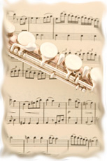

|
Concert venues
Romsey Abbey hosts the Festival's concerts requiring instrumental forces no greater than a Classical orchestra. Accommodating up to 150 choral singers the Abbey offers excellent acoustics and a fine organ. Normally three choirs combine in Romsey with conductors drawn from the Festival 'team'. Since 2000 these concerts have featured works such as: Purcell's Come Ye Sons of Art, Bach's Magnificat, Handel's Samson, Mozart's Requiem, Haydn's Creation and Missa in Tempore Belli, Mendelssohn's Hymn of Praise, Faure's Requiem, Orff's Carmina Burana, Malcolm Archer's Requiem and Rutter's Mass of the Children.
Winchester Cathedral has space for over 200 choristers and is a wonderful venue for large-scale works demanding extra orchestral resources. Four or occasionally five choirs will assemble for the cathedral concert under the Festival's Director of Music. Programmes since 2000 have included: Bach's St. John Passion, Mozart's C minor Mass, Mendelssohn's Elijah, Rossini's Stabat Mater, Verdi's Requiem, Brahms's Requiem, Elgar's Dream of Gerontius and an Elgar 150th Anniversary programme including The Music Makers and The Spirit of England.
The first complete performance in Winchester of The Armed Man: a Mass for Peace (Karl Jenkins) took place in the Festival's Cathedral concert in 2009.
|

|